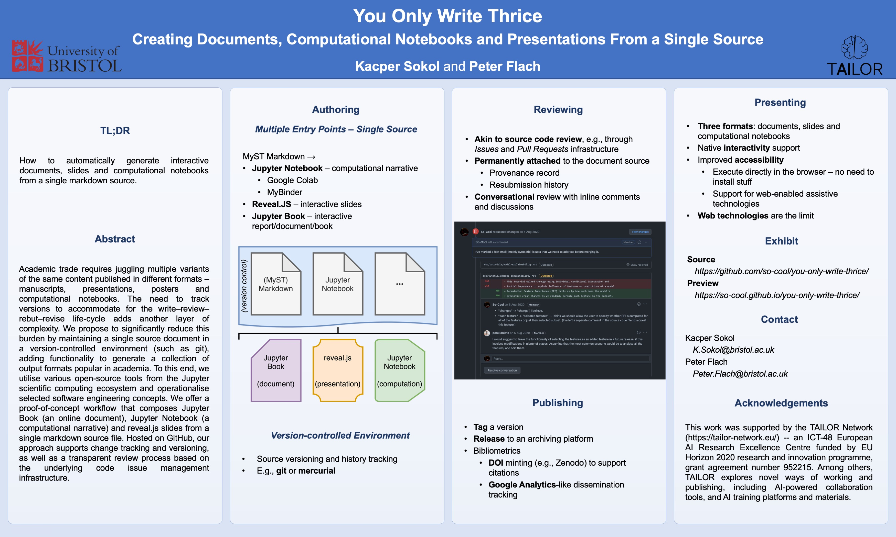

You Only Write Thrice
Contents
You Only Write Thrice#
Creating Documents, Computational Notebooks and Presentations From a Single Source
TL;DR
How to automatically generate interactive documents, slides and computational notebooks from a single markdown source.
Authors
Kacper Sokol and Peter Flach
{K.Sokol,
Peter.Flach}@bristol.ac.uk
Department of Computer Science,
University of Bristol,
Bristol, United Kingdom
Venue
This Jupyter Book article is an exhibit accompanying the “You Only Write Thrice” paper published at Rethinking ML Papers – ICLR 2021 Workshop ().
Abstract#
Academic trade requires juggling multiple variants of the same content published in different formats: manuscripts, presentations, posters and computational notebooks. The need to track versions to accommodate for the write–review–rebut–revise life-cycle adds another layer of complexity. We propose to significantly reduce this burden by maintaining a single source document in a version-controlled environment (such as
git), adding functionality to generate a collection of output formats popular in academia. To this end, we utilise various open-source tools from the Jupyter scientific computing ecosystem and operationalise selected software engineering concepts. We offer a proof-of-concept workflow that composes Jupyter Book (an online document), Jupyter Notebook (a computational narrative) and reveal.js slides from a single markdown source file. Hosted on GitHub, our approach supports change tracking and versioning, as well as a transparent review process based on the underlying code issue management infrastructure. An exhibit of our workflow can be previewed at https://so-cool.github.io/you-only-write-thrice/.
Static Document#
In addition to this online document, the paper can be downloaded as a PDF either from OpenReview or arXiv. The source of this article is available on GitHub.
Review#
This paper has been reviewed on OpenReview.
Promotional Video#
Oral Presentation#
The oral presentation is available on SlidesLive (starting at 4:14:00) via the recording of the workshop, with the video embedded below. Alternatively, you can view the talk on YouTube. The slides used for the presentation are published as part of this online document.
Slides#
Section 6: Slides renders the slides as an article page. To view this content as a static (reveal.js) or an interactive (reveal.js and RISE; launched via Jupyter Notebook delivered through MyBinder) presentation use these buttons.
Static Slides Interactive Slides
Note
More instructions on how to launch the slides are available in Section 6.
SlidesLive#
YouTube#
Poster#

Citation#
@inproceedings{sokol2021you,
title = {{Y}ou {O}nly {W}rite {T}hrice:
{C}reating {D}ocuments, {C}omputational {N}otebooks and
{P}resentations {F}rom a {S}ingle {S}ource},
author = {Sokol, Kacper and Flach, Peter},
booktitle = {{B}eyond static papers:
{R}ethinking how we share scientific understanding in {ML} --
{ICLR} 2021 workshop},
year = {2021},
note = {arXiv preprint arXiv:2107.06639},
doi = {10.5281/zenodo.5106062}
}
About#
See also
The original version of this exhibit was based on ProbLog code boxes. An iteration of this content is now hosted in the simply-logical/problog-book-template GitHub repository, which is published at https://problog-template.simply-logical.space/.
Note
For more details about installing necessary dependencies and building this
book see the README.md file included in the [GitHub repository] –
so-cool/you-only-write-thrice – that holds the source of this book.